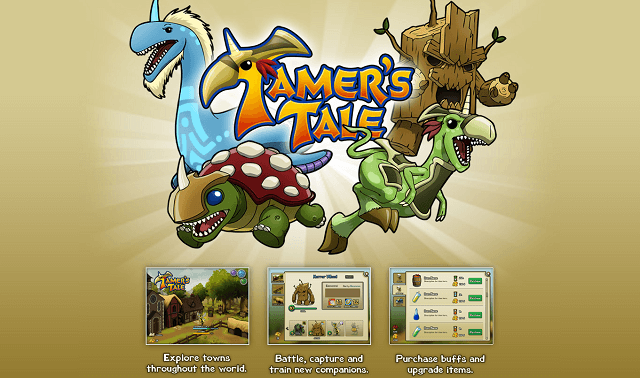

Tamer's Tale
Web2py and Python
A monster collection game for Facebook (Unreleased)
Tamer's Tale was a multi-level monster collection game built using a Python web framework called Web2py. Web2py is much like Django in functionality, providing nearly all the web primatives necessary to create an application quickly. Over the course of about 18 months, I worked with a number of contract artists to create the content to populate the world with three tiers of monsters to battle, befriend, and train with another two levels of planned content.
Sadly, real life got in the way of completing the project and Facebook soon after made a number of changes which limited the ability for games hosted on the platform to grow sufficently for them to be successful. It was also around this time that mobile gaming became vastly more popular in the US further deterorating the market for games hosted on the Facebook platform.
Sorry, no source available for this game.